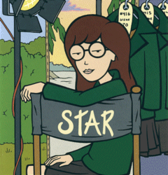

A Daria Fan Site by Martin J. Pollard
A Daria Fan Site by Martin J. Pollard
|
Fan-created stories and artwork are still gladly accepted! Read the Fan Fiction Submission Guidelines and Artwork Submission Guidelines for the who-what-where-when-why on submitting your work. |
|
|
|
Last Updated September 2011 (see What's New for details) Daria: The Complete Animated Series still a top seller one year later! See Daria on DVD for complete details! Daria helps you find your way around town! Find out about this and more at The Daria News Desk! Other fine sources for Daria info: The Daria Fandom Blog II and The Daria Wiki |
|
NOTE THAT THIS IS AN INDEPENDENT, FAN-RUN SITE! It is NOT affiliated with MTV in ANY way! |
|
|
Site Contents |
|
| News | All of the latest news regarding Daria and related topics. |
|---|---|
| Characters | Complete information on all the major characters. |
| Episode Guide | Episode summaries, transcripts, and behind-the-scenes information. |
| Fan Fiction | Original stories based on the series written by Daria fans. |
| Art Gallery | Images from books, episodes, and other stories, plus original artwork based on the series created by Daria fans. |
| Essays & Rants | Essays and commentary regarding any and all aspects of Daria. |
| In the Media | Articles, reviews, and other information about Daria from the national and international media. |
| Computer Add-Ons | Various Daria-themed goodies for your computer, such as icons, wallpaper, themes, and more. |
| Frequently Asked Questions | Got a question about Daria? Here's where you can find some answers. |
| Links | Other places to visit in cyberspace to satisfy your Daria cravings. |
|
Thanks and Acknowledgments |
|

I'd like to take this opportunity to thank the following people, without whose efforts the whole Daria experience (both on-screen and off) would not exist. So, without further ado, heartfelt thanks go to... |
|
Those Boring Disclaimers... |
|
Information used to create this site comes from various sources, including the television episodes, MTV's Daria web page, The Daria Diaries by Anne D. Bernstein, The Daria Database by Peggy Nicoll, and the participants of the alt.tv.daria Usenet newsgroup and the #daria+ IRC channel. |
|
MTV Music Television, Daria, Beavis and Butt-head, and all related titles, logos and characters are trademarks of MTV Networks, a division of Viacom International, Inc. All other titles, logos, and characters are trademarks or registered trademarks of their respective copyright holders. This site was created solely for entertainment purposes, and neither the webmaster or any other entity profits (or makes any money at all) from this site. |